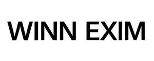

Trade Mark Journal No.2025/052 26 December 2025
UK00004309940 12 December 2025 (6,16,20,21,28)

- Class 6
- Aluminium foil paper; Foil of metal for packaging; Aluminium foil for cooking purpose; Packaging containers of metal; Wrapping and packaging (Foils of metal for -).
- Class 16
- Printed recipes sold as a component of food packaging; Scoops made of card for the disposal of pet excrement; Plastic film roll stock for packaging food; Food waste bags of paper for household use; Paper for use as material of stock certificates (shokenshi); Food wrapping plastic film for household use; Biodegradable paper pulp-based to-go containers for food; Carbonising base paper; Printed price lists; Plastic film roll stock for packaging; Pre-paid purchase cards, not magnetically encoded; Packaging materials made of recycled paper; Stencil paper [finished product]; Bags made of paper for packaging; Food bag tape for freezer use; Stenographers' note books; Napkins made of paper for household use; Plastic material for packaging; Food waste bags of biodegradable plastic for household use; Baggage claim check tags of paper; Mildewproof paper; Craft paper; Paper crafts materials; Paper.
- Class 20
- Packaging containers of plastic; Containers of plastic (Packaging -); Packing containers of plastic material; Plastic suction cups.
- Class 21
- Disposable aluminium foil containers for household purposes; Disposable aluminum foil containers for household purposes; Foil food containers; Plastic bowls [household containers]; Cups of paper or plastic; Biodegradable paper pulp-based plates; Biodegradable paper pulp-based bowls; Lockable non-metal household containers for food; Glass lids for industrial packaging containers; Biodegradable paper pulp-based cups; Plastic containers for dispensing food to pets; Industrial packaging containers of glass; Coffee cups; Tea cups; Cups; Cup lids; Glass cups; Cup holders; Liqueur cups; Cups and mugs; Drinking cups; Plastic cups; Paper cups; Double wall cups; Compostable cups; Biodegradable cups; Cups made of plastics.
- Class 28
- Toys; Toys, games, and playthings; Toys and playthings for pets; Ride-on toys; Cuddly toys; Puzzles [toys]; Toys for sandpits; Plush toys; Stuffed toys; Inflatable toys; Noisemakers [toys]; Toys for babies; Toys for pets; Wind-up toys; Fidget toys; Toys for use in perambulators; Radio-controlled toys; Plastic toys; Crib toys; Scooters [toys]; Mobiles [toys]; Toys, games and playthings for pet animals; Windup toys; Rattles [toys]; Toys for cats; Wooden toys; Toys for infants; Model cars [toys or playthings]; Toys and playthings for pet animals; Toys for dogs; Toy dolls; Educational toys; Outdoor toys; Bendable toys; Toy playsets; Models being toys; Bath toys; Infant toys; Sandbox toys; Bathtub toys; Electronic toys; Action figures [toys or playthings]; Whistles [toys]; Sand toys; Inflatable ride-on toys; Soft toys; Controllers for toys; Miniature car models [toys or playthings]; Bouncing toys; Drones [toys]; Cloth toys; Musical toys; Tricycles for infants [toys]; Toy figurines; Toy furniture; Toys for birds; Mechanical toys; Play mats for use with toy vehicles [playthings]; Wheeled toys; Clockwork toys; Developmental toys; Crib mobiles [toys]; Fluffy toys; Plastic toys for use in the bath; Stuffed animals [toys]; Inflatable bath toys; Rocking toys; Stacking toys; Fabric toys; Water toys; Plastic models being toys; Modular toys; Model toys; Whack-a-mole toys for pets; Play mats incorporating infant toys [playthings]; Drawing toys; Toy prams; Action toys; Stuffed and plush toys; Stuffed plush toys; Plush stuffed toys; Battery-operated action toys; Sketching toys; Children's toys; Squeezable squeaking toys; Toy bicycles; Smart toys; Whistling toys; Toy tableware; Plastic character toys; Clockwork toys [of plastics]; Construction toys; Toy wheelbarrows; Articles of clothing for toys; Push toys; Squeeze toys; Talking toys; Toy bakeware and toy cookware; Bendy balls being toys; Toy xylophones; Toy mobiles; Stuffed bean-filled toys; Clothing for toy figures; Pull toys; Toy animals; Chewing toys for parrots; Toy cars; Toy strollers; Water-squirting toys; Toy balloons; Toys for pet animals; Assembly toys; Toy scooters; Toy hats; Intelligent toys; Punching toys; Music box toys; Toy cookware; Toy harmonicas; Toy automobiles; Smart plush toys; Toy robots; Toy tools; Toys in the form of puzzles; Toy weapons; Xylophones being musical toys; Novelty toys for parties; Toy glockenspiels; Soft sculpture toys; Inflatable pool toys; Costumes being childrens playthings; Money guns being toys; Toy balls; Toy bakeware; Toy pushchairs; Puzzle mats [toys]; Toy airplanes; Toy vehicles; Playthings.
WINN EXIM LTD